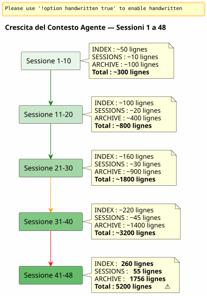

Sliding Window e Onda Fredda: Quando il Contesto dell'Agente Esplode e bisogna Archiviare senza Perdere
Publié le 26 April 2026
Riassunto
Dopo 48 sessioni su un solo progetto e 150+ in totale, il sistema di governance Eager/Lazy che avevo costruito con cura cominciava a soffocare. I file degli agenti, che dovevano essere leggeri, pesavano 5200 linee cumulative. Il contesto auto-caricato aumentava più velocemente della mia capacità di controllarlo. Questo articolo racconta come ho concepito un meccanismo di backup — tra sliding window e onda fredda identica — per mantenere un contesto attivo leggero senza mai perdere nulla.
Il Segnale : 5200 linee
Sono in piena sessione 048 su`magic-stick`, il mio progetto di build dell’ISO Linux live. Opcode mi guarda. Come sempre, ha caricato automaticamente i miei file Eager all’inizio della sessione —AGENT.adoc, PROMPT_REPRISE.adoc, .agents/INDEX.adoc. Niente d’anormale.
Ma qualcosa non va. Le risposte sono più lente. Il ragionamento è più diluito. L’agente dimentica dei dettagli che aveva sotto gli occhi due messaggi fa.
Apro un terminale e digito:
wc -l .agents/INDEX.adoc .agents/SESSIONS_HISTORY.adoc \
.agents/archives/COMPLETED_TASKS_ARCHIVE_2026-04.adoc260 righe per INDEX. 55 per SESSIONS_HISTORY.1756 per COMPLETED_TASKS_ARCHIVE.
Il dossier`sessions/`aggiunge ancora ~3200 linee. Totale :5200 righedi contesto che si caricano, in un modo o nell’altro, nel cervello temporaneo dell’agente.
La strategia Eager/Lazy che avevo teorizzato nell’articolo precedente funziona — ma ha un difetto congenito che non avevo anticipato: non hanessun meccanismo di invecchiamento. Ogni sessione aggiunge una riga a INDEX, un paragrafo a COMPLETED_TASKS, un file in sessions/. Niente esce mai. Il contesto è una palla di neve che cresce a ogni nuova sessione.

Non è un bug, è una conseguenza diretta della procedura di chiusura della sessione che archivia meticolosamente ogni dettaglio. Il sistema è vittima del proprio successo.
La Diagnosi: Ridondanza Tripla
Chiedo all’agente di diagnosticare il problema. La sua risposta è immediata e chirurgica.
file |
Linee |
Ruolo |
Problema |
|
260+ |
EAGER (auto-caricato) |
Tabella di tutte le sessioni dalla 001 —+1 riga per sessione |
|
55 |
avido |
Tabella riepilogativa —ridondanza con INDEX |
|
1756 |
EAGER (implicito) |
Dettagli completi di tutte le sessioni di aprile |
|
(no output) |
LAZY (supposto) |
Archivi individuali, manon utilizzate# Comandi CLI di JBake |
L’agente identifica quattro cause radice :
-
COMPLETED_TASKS_ARCHIVE assorbe tutto— Invece di puntare verso gli archivi`.sessions/`, egli copia integralmente ogni sessione.
-
INDEX.adoc serve da storico completo— La tabella "Sessions Récentes" contiene 30+ voci.
-
SESSIONS_HISTORY.adoc ridondante— Stessa informazione di INDEX, formato diverso.
-
La regola LAZY non è rispettata— COMPLETED_TASKS è implicitamente EAGER perché contiene tutto.
La sua proposta è radicale: limitare INDEX a 10 sessioni, svuotare COMPLETED_TASKS, spostare SESSIONS_HISTORY in LAZY puro. Guadagno immediato:~1900 linee risparmiate.
È pulito, efficiente, logico. Ma ho un problema con questo approccio.
Perché ho rifiutato la soluzione evidente
La soluzione dell’agente è quella di un ingegnere che ottimizza una cache. Limitare. Troncare. Eliminare le ridondanze.
Ma queste 'ridondanze' non sono tali. Ogni file di governance cattura unangolo diversosulla stessa realtà:
-
INDEXvista macro, cruscotto esecutivo
-
SESSIONI_STORICO= tabella cronologica lineare, segnata
-
COMPLETATO_COMPITI_ARCHIVIO= narrativa dettagliata con metriche
-
sessions/.adoc* = archivi individuali, contesto completo
Non è una duplicazione stupida. È dellaprospettiva multipla strutturata. Questo è esattamente ciò di cui abbiamo bisogno per distillare — affinché in futuro, un essere umano (o un LLM futuro meglio addestrato) possa incrociare gli angoli e estrarre i modelli.
Immagina un data scientist che ti dice: «Eliminiamo 3 colonne su 6, sono correlate.» Tu cosa gli rispondi? Che la correlazione non è ridondanza quando ogni colonna cattura una dimensione diversa dello stesso fenomeno. Che è proprio questa ricchezza dimensionale che rende il dataset sfruttabile.
È la mia intuizione. E la difendo contro la razionalità fredda dell’agente.
(No output) Non vedo un contenitore silenzioso nella mia idea. Non si mette tutto dentro, si sposta il risultato strutturato della procedura di fine sessione — ogni file con il suo angolo, le sue ridondanze che in realtà sono un arricchimento. Questo materiale multidimensionale sarà migliore per la distillazione. (No output)
L’agente accusa il colpo. E si corregge.
La Proposizione: Onda Fredda Identica
L’agente allora propone un meccanismo più fine, che rispetta la mia intuizione di dataset ricco risolvendo allo stesso tempo il problema tecnico del contesto che esplode.
Il principio è semplice e si ispira direttamente al patternMemoria calda/ti/ freddaapplicato alla gestione degli archivi:
-
Hot (EAGER)= le ultime 10 sessioni in INDEX, PROMPT_REPRISE della sessione N+1, gli ultimi 2 file di sessione
-
Caldo (PIGRO)= SESSIONS_HISTORY recente, SCRIPT_VERIFICATION, tutta la documentazione di riferimento
-
freddo (backup/)= tutto il resto, spostatointatto, senza trasformazione, senza reindicizzazione
----
----
.agents/
├── INDEX.adoc → Sessions N-9 à N (10 dernières)
├── SESSIONS_HISTORY.adoc → Sessions N-9 à N
├── SCRIPT_VERIFICATION.adoc → Dernière vérif (pas d'historique)
├── PROMPT_REPRISE.adoc → Session N+1 uniquement
├── sessions/ → Sessions N-1 à N uniquement
└── backup/
└── Y2026-sessions-001-039/ ← Vague froide, COPIE INTÉGRALE
├── INDEX.adoc → Sessions 001 à 039 (complet)
├── SESSIONS_HISTORY.adoc → Sessions 001 à 039 (complet)
├── COMPLETED_TASKS_ARCHIVE.adoc → Sessions 001 à 039 (complet)
└── sessions/ → 001.adoc, 002.adoc...
----
La chiave del meccanismo:**Il backup non è un indice centrale, è una copia conforme dell'onda passata**. Quando si supera l'orizzonte delle 10 sessioni attive, non si elimina nulla. Non si reindicizza nulla. Non si fonde nulla. Si prende il pacchetto di file degli agenti così com'era alla sessione N-10 e lo si sposta dentro`backup/`.
I file attivi, invece, sono troncati:
* INDICE : solo le ultime 10 righe (finestra scorrevole)
* SESSIONS_HISTORY: idem
* COMPLETED_TASKS_ARCHIVE : nuovo file per il periodo in corso
* sessions/ : solo le ultime 2 sessioni
[plantuml, format=svg, id=diag-hot-warm-cold, alt="Architecture Hot/Warm/Cold du contexte agent — EAGER/LAZY/backup"]
----
@startuml
skinparam backgroundColor #FEFEFE
skinparam defaultTextAlignment center
skinparam wrapWidth 200
title Architettura Hot / Warm / Cold dell'Agente di Contesto
package "HOT (EAGER)
Caricato automaticamente
~300 linee" as HOT #FFCDD2 {
file "INDEX.adoc\n(10 sessioni)" as IDX_HOT
file "PROMPT_REPRISE\n(session N+1)" as PRO_HOT
file "AGENT.adoc\n(regole assolute)" as AG_HOT
}
package "WARM (LAZY)
Caricato su richiesta
~500 linee" as WARM #FFF9C4 {
file "SESSIONS_HISTORY
(10 ultime)" as HIS_WARM
file "SCRIPT_VERIFICATION
(ultima)" as VER_WARM
file "PROCEDURES.adoc
(modelli)" as PRO_WARM
file "*_REFERENCE.adoc\n(documento tecnico)" as REF_WARM
}
package "COLD (backup/)\nMai caricato\nLettura umana solamente" as COLD #BBDEFB {
folder "Y2026-001-039/" as WAVE {
file "INDEX (complet)" as IDX_COLD
file "SESSIONS_HISTORY\n(completo)" as HIS_COLD
file "COMPLETED_TASKS\n(completo)" as ARCH_COLD
folder "sessioni/ (001-039)" as SESS_COLD
}
folder "Y2026-040-???\n(futuro)" as FUTURE
}
HOT --> WARM : "Agente sale
se necessario"
WARM --> COLD : "Mai automatico
L'uomo va da solo"
note bottom of COLD
Règle : COPIE INTÉGRALE
Pas de transformation
Pas de réindexation
Read-only après archivage
end note
@enduml
----
Il guadagno immediato è enorme: il contesto EAGER passa da**~5200 righe a ~300 righe**. Una divisione per 17. Senza aver perso nemmeno una riga di dati storici.
== Perché questo non è un fourre-tout
L'agente, nella sua prima iterazione, temeva che`backup/`diventi una scatola nera — una cartella in cui si gettano file che non si leggeranno mai. È una paura legittima. Ma essa si basa su un equivoco.
Un contenitore generico, è quando si gettano i file**senza struttura, senza convenzione, senza logica di raggruppamento**. Qui, il backup è strutturato per periodo (Y2026-001-039), e ogni cartella di backup contiene**la stessa struttura**che il dossier`.agents/`attivo : INDEX, SESSIONS_HISTORY, COMPLETED_TASKS_ARCHIVE, sessions/.
Non è un tuttofare. È un**istantanea timestampata**. Si potrebbe anche dire che è un meccanismo di versioning semplificato — a parte che non versiona i file singolarmente, ma l'intero pacchetto di governance in un dato momento.
Quando vuoi trovare un'informazione vecchia, non hai bisogno di un indice centrale. Hai due opzioni :
1. **grep` mirato**:`grep -r "zsh" backup/Y2026-001-039/`— e trovi tutto ciò che menziona zsh nel periodo, indipendentemente dall'angolo (INDEX, SESSIONS_HISTORY, archivio di sessione).
2. **Reintegrazione manuale**Copiate temporaneamente la cartella di backup nel contesto attivo e chiedete all'agente di analizzare questo periodo specifico.
L'indice è implicito. È nella struttura stessa dei file — ciascuno essendo già un indice dal proprio punto di vista.
== La metafora degli scaffali
Per rendere il meccanismo intuitivo, l'ho concepito in tre mensole:
* **Scaffale 1 (EAGER)**— il piano di lavoro. Ciò di cui ho bisogno *adesso*. INDICE recente, PROMPT_RESUME, regole assolute. Leggero, immediato, critico.
* **Scaffale 2 (LAZY)**— la biblioteca di consultazione. Ciò che posso andare a cercare su richiesta. Riferimenti tecnici, storico recente, procedure. Più voluminoso, ma non caricato in memoria.
* **Cantina (backup/)**— gli archivi freddi. Tutto ciò che è passato ma che non voglio gettare. L'agente non ci entra mai. L'uomo scende quando vuole distillare.
L'agente ha inizialmente proposto una quarta mensola — un`index-backup.adoc`che sarebbe LAZY e conterrebbe una tabella dei contenuti di tutto il backup. L'ho rifiutato. Sarebbe una ridondanza in più in un sistema che già soffre di crescita lineare. La struttura dei file archiviati è già un indice.
== Sensore a due trigger
La concettualizzazione era solida, ma rimaneva un punto cieco:**Quando esattamente attivare la rotazione?**L'articolo iniziale lo identificava come una domanda aperta. Due giorni dopo, la risposta è codificata nei file di governance di sei progetti: un sensore a due trigger.
=== Il Trigger Automatico — `N % 10 == 0
Il primo trigger è matematico. Quando il numero di sessione è un multiplo di 10 — sessione 10, 20, 30, 40 — la rotazione di backup viene eseguita automaticamente all'interno della procedura di fine sessione, subito dopo il passaggio 6.
Perché 10 ? È il compromesso tra due forze contrapposte: una finestra troppo corta (5 sessioni) perde il contesto necessario alla continuità; una finestra troppo lunga (20 sessioni) non risolve il problema dell'ingombro del contesto. Dieci sessioni, a un ritmo di una o due sessioni al giorno, coprono circa una settimana di lavoro — abbastanza affinché l'agente si ricordi delle decisioni recenti, ma non abbastanza affinché il contesto esploda.
=== Lo Scatenatore per Soglia — 500 Righe EAGER
Il secondo trigger è dinamico. Indipendentemente dal numero di sessione, se i file EAGER cumulati superano**500 righe**, la rotazione si attiva.
Questa soglia protegge dallo scenario in cui le sessioni sono eccezionalmente produttive — molto contenuto scritto in poche sessioni. Una sessione che produce 120 linee di contenuto editoriale fa crescere COMPLETED_TASKS_ARCHIVE molto più velocemente rispetto a una sessione di debug che corregge due righe. La soglia di 500 linee, misurata tramite`wc -l .agents/INDEX.adoc .agents/archives/COMPLETED_TASKS_ARCHIVE_*.adoc PROMPT_REPRISE.adoc`, cattura questa asimmetria.
=== Il Déclencheur Manuel — "rotation backup
Infine, l'uomo mantiene il controllo. Le parole chiave`rotation backup`, `backup rotation` ou `lance la rotation backup`avviano la procedura su richiesta, indipendentemente dalla fine della sessione. Utile quando si sente che il contesto sta diventando pesante ma non si è ancora a un multiplo di 10, oppure quando si vuole archiviare una fase di lavoro prima di iniziarne una nuova.
[plantuml, format=svg, id=diag-capteur-trigger, alt="Les trois déclencheurs du capteur de rotation backup — automatique, seuil, manuel"]
----
@startuml
skinparam backgroundColor #FEFEFE
skinparam defaultTextAlignment center
skinparam wrapWidth 200
title Sensore di Rotation Backup — I tre trigger
start
:Procédure de fin de session;
note right: Mots-clés "fine della sessione"\nou "ci fermiamo lì"
:Étapes 1 à 6\n(archivage standard);
note right
1. Archive sessions/N.adoc
2. MAJ PROMPT_REPRISE
3. MAJ SESSIONS_HISTORY
4. MAJ INDEX.adoc
5. MAJ TEST_COVERAGE
6. MAJ COMPLETED_TASKS
end note
if (N % 10 == 0\nOU\nEAGER cumulé > 500 lignes ?) then (oui)
:⚙️ Rotation Backup\n(étape 7);
note right
1. Créer backup/Y20XX-sessions-X-Y/
2. Copier intégrale INDEX + HISTORY
+ COMPLETED_TASKS + sessions/
3. Tronquer actifs à 10 sessions
4. Ajouter _Localisation active_
end note
else (non)
:Pas de rotation;
endif
:Checklist [✅] x 7\n(si applicable);
stop
@enduml
----
Questo diagramma mostra l'inserimento esatto del sensore nella procedura di fine sessione. Il passaggio 7 è facoltativo — esso viene eseguito solo se una delle due condizioni è vera — ma viene sistematicamente *verificato*. La checklist finale include`[✅] 7. Backup roté (si applicable)`.
=== Il ciclo chiuso
Questo sensore chiude il ciclo aperto dall'articolo precedente. La governance Eager/Lazy aveva risolto il problema della memoria dell'agente tra due sessioni. Il meccanismo Hot/Warm/Cold ha risolto il problema della memoria che aumenta. Il sensore a due trigger risolve il problema del *quando* — togliendo all'uomo il carico mentale di monitorare la dimensione del contesto.
[plantuml, format=svg, id=diag-boucle-fermee, alt="Les trois couches de la gouvernance agent — Eager/Lazy, Hot/Warm/Cold, Capteur"]
----
@startuml
skinparam backgroundColor #FEFEFE
skinparam defaultTextAlignment center
title I Tre Strati della Governance dell'Agente
left to right direction
package "Livello 1 — Memoria
(Articolo 0108)" as C1 #E8F5E9 {
rectangle "**EAGER**\nCruscotto\nCaricato automaticamente" as EAG
rectangle "**LAZY**
Manuale del proprietario
Caricato su richiesta" as LAZ
EAG -[hidden]right-> LAZ
}
package "Strato 2 — Invecchiamento
(Articolo 0110)" as C2 #FFF9C4 {
rectangle "**HOT**
10 sessioni attive
~300 righe" as HOT
rectangle "**WARM**
Riferimenti
Procedure" as WRM
rectangle "**COLD**
backup/
Onda fredda" as CLD
HOT -[hidden]right-> WRM
WRM -[hidden]right-> CLD
}
package "Livello 3 — Attivatore\n(Oggi)" as C3 #BBDEFB {
rectangle "**Automatico**
N % 10 == 0" as AUTO
rectangle "**Soglia**
> 500 linee" as SEUIL
rectangle "**manuale**
rotation backup" as MAN
AUTO -[hidden]right-> SEUIL
SEUIL -[hidden]right-> MAN
}
C1 --> C2 : "La memoria cresce\n→ è necessario un meccanismo\ndell'invecchiamento"
C2 --> C3 : "L'invecchiamento
→ serve un trigger
per eseguirlo"
note bottom of C3
✅ Déployé sur 6 projets
magic-stick · bakery-gradle
plantuml-gradle · cheroliv.com
jhipster-gradle-plugins
quizz-benchmark-gradle
end note
@enduml
----
Le tre strati si sovrappongono logicamente. Il primo fornisce una memoria all'agente. Il secondo impedisce che questa memoria soffochi l'agente. Il terzo automatizza la manutenzione di questa memoria affinché l'uomo non debba pensarci.
=== La Migrazione Efficace su cheroliv.com
Il meccanismo non è rimasto teorico. Su`cheroliv.com`, la prima rotazione di backup è stata eseguita il 29 aprile 2026 — le sessioni da -6 a 2 sono state migrate verso`.agents/backup/Y2026-sessions-neg6-a-002/`:
|===
|File |Prima della rotazione |Dopo rotazione |guadagno |`.agents/INDEX.adoc` |19 sessioni elencate |10 sessioni (3-12) |-9 voci |`.agents/SESSIONS_HISTORY.adoc` |18 sessioni |10 sessioni |-8 voci |`COMPLETED_TASKS_ARCHIVE` |161 righe (sessioni 1-12) |135 linee (sessioni 3-12) |-26 linee |`sessions/` |20 file |10 file |-10 file |**backup/** |Inesistente |1 ondata fredda (10 sessioni archiviate) |+1 pacchetto freddo
|===
Il guadagno in righe era modesto — il progetto è giovane, 12 sessioni — ma l'importante è che il**Il meccanismo è in atto**. La prossima rotazione automatica si attiverà alla sessione 20, o prima se le 500 linee EAGER vengono raggiunte.
== La Lezione Agente-Umano
Questa sessione 048 mi ha insegnato qualcosa di fondamentale sulla collaborazione con un agente IA.
L'agente ha un pregiudizio naturale: cerca di**ottimizzare**, à **semplificare**, à **eliminare le ridondanze**. È il pregiudizio di un sistema addestrato a produrre risposte pulite e concise. Di fronte a un dataset ricco e multidimensionale, il suo primo riflesso è di ridurlo alla sua forma più semplice.
L'uomo, lui, ha un'intuizione diversa: intuisce che la ridondanza strutturata è un**vantaggio**, non è un difetto. Che la diversità degli angoli su una stessa realtà è precisamente ciò che permetterà, più tardi, una distillazione di qualità.
Non è che l'agente abbia tort. È che il suo "optimum" non è il mio. L'agente ottimizza per il**presente**— il contesto immediato, la risposta rapida alla domanda posta. L'umano ottimizza per il**futuro**— la capacità di ritrovare, incrociare, distillare entro tre mesi o tre anni
(No output) Ciò che voglio è il materiale grezzo. Le tue riflessioni, le tue esitazioni, le tue risposte alle mie domande. Non la tua sintesi. La sintesi so farla meglio di te. Voglio la materia prima. (No output)
Questa frase che gli ho detto alla fine della sessione riassume tutto. L'agente è uno strumento di produzione. L'uomo è lo strumento di distillazione. La governance non è fatta affinché l'agente capisca tutto da sola — è fatta affinché l'uomo possa, più tardi, lavorare il materiale prodotto.
L'onda fredda identica è la traduzione architettonica di questa filosofia: non si butta nulla, non si fonde nulla, non si reindicizza nulla. Si sposta il pacchetto intatto. La distillazione arriverà più tardi, a mano, dall'essere umano.
== Il seguito logico dell'articolo precedente
Se hai lettolink:/blog/2026/0108_gouvernance_agent_opencode_eager_lazy_post.html[l'articolo sulla strategia Eager/Lazy], riconoscerete la progressione naturale :
1. **Article 0108**— La governance Eager/Lazy : *come* strutturare il contesto dell'agente su due livelli di disponibilità
2. **Questo articolo 0110**— Il meccanismo di backup : *comment* far invecchiare questo contesto senza perderlo quando diventa troppo voluminoso
Il primo articolo rispondeva alla domanda: « L'agente non ricorda nulla tra due sessioni, come dargli una memoria?
Questo risponde alla domanda che deriva inevitabilmente dalla prima: « La memoria aumenta ad ogni sessione, come impedirle di soffocare l'agente senza cancellarla ?
La risposta si riduce a un pattern**caldo/tiepido/freddo**, applicato ai file di governance. E in un principio:**non perdere mai nulla, sempre ricollocare tutto**.
== link
* Articolo precedente :link:/blog/2026/0108_gouvernance_agent_opencode_eager_lazy_post.html[Governare un agente IA con AsciiDoc]
* Il mio sito: https://cheroliv.com
* Il progetto`magic-stick`: https://github.com/cheroliv/magic-stick
---
*Un buon sistema di governance non elimina mai dati. Li archivia.*
----Articoli correlati
14 May 2026